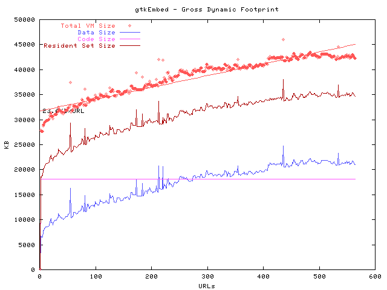
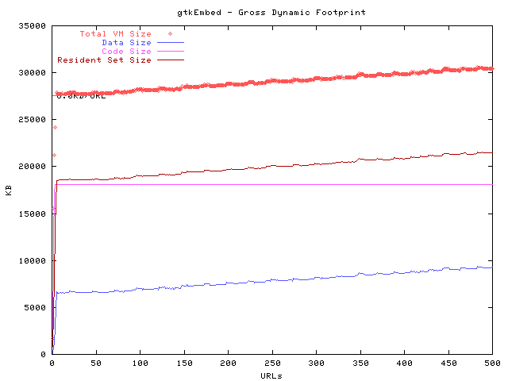
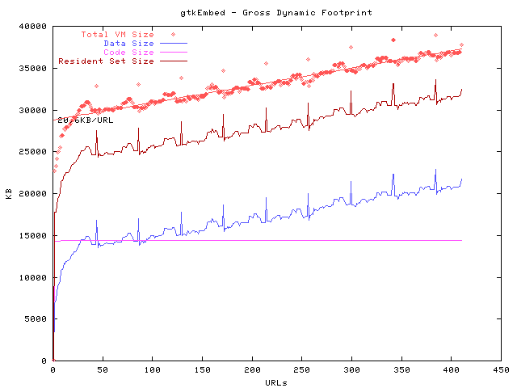

Memory usage observations
by Bill Law, edited by Alec Flett <alecf@flett.org>
Editor's Note: This is a document from bill law which includes some followup comments by Chris Waterson. Chris's responses are interspursed throughout Bill's notes.The following are some observations which I think I can make after doing quite a lot of ad hoc memory testing against the gtkEmbed browser on Linux over the past few weeks. These conclusions have not been rigorously tested but might provide food for thought.
- When I discovered the static in-house set of urls which John Morrison is maintaining, and switched my focus to testing against them instead of live urls from the outside, tests began making quite a lot more sense. It seems that real world uses pages with more than enough "color" to make results almost random.
Chris responds:
Bill writes:jrgm's 'static buster test suite' is base on content from top sites. the list of sites that he has captured and made copies of can be found here if anyone else is interested in reproducing the content we will be using in daily memory testing and reporting. http://lxr.mozilla.org/mozilla/source/tools/footprint/lists/static41.list
- On the other hand, I wonder if it is really necassary for our browser to become so unpredictable in memory consumption across live urls? Is this because we are not handling memory usage wisely or is it unavoidable given the nature of the beast?
Bill writes:Here is what a typical random URL list shows for memory consumption. In this case we consumed up to 50 MB's and topped off around 40MB's at the end of the test run.

- To get really consistant, reproducable results it is not only necassary to hit static urls, but also to order the urls, either 1)from greatest memory user to least, 2)visa versa or to 3)hit the same url over and over. In these cases the test results become much more predictable and consistant across all the data. Again, however, this is not going to be the case in the real world!
Bill writes:One theory to explore would be that fragmentation maybe greater as the content we load becomes more varied and random...
- Hitting the same static url over and over generates almost a perfectly linear growth with a slope consistantly < 10K / url. In this case cnn.com loaded 500 times in a row.
The next graph shows that we could actually control memory usage pretty well if we could get users to only load the same site over and over again... ;-) the CNN site is actually on of the biggest consumers of memory and the slope gets even flatter if we load more simple content.Bill writes:
The small hickups in the CNN graph appear to be the result of varied content or periodic pop up windows. Here is a graph of the exicite page loaded over and over 500 times. The exicite content has less variation and memory use is pretty much controled.
- Ordered lists, either way, seem to be about as predicable with slightly steeper slopes.
Bill writes:Graph below shows 41 top sites loaded over 10 cycles. Each of the 'peaks' shows the start of a new cycle with one of the biggest memory consumers starting the greatest to least cycle. Here again we don't have the extremes of memory consumtion when loading a random set of sites, and overall consumption by the end of test is lower.

- Hitting random sites (live or static) has a couple fairly consistant patterns different from hitting ordered lists:
- The slope of the resulting graph is usually much steeper over the initial 100 urls (70K/url?? or more in many cases) than over subsequent hits (seems to drop into the 10-20K+/url range after 100 urls). For ordered lists (apparently regardless of how they are ordered) the graph seems to establish a slope and stick to it after the first 5 or so urls.
- Even when slope levels off it is consistantly greater than for ordered sites.
- Even though the average slope across 100 urls anywhere on the graph (after the first 100 urls) is usual very consistant, there are RADICAL (~0K/url to ~50K/url) swings in memory consumption over smaller subsections of the graph.
- The slope never seems to flatten out to zero. (I.e., there is always some memory leakage going on?)
leakage, or unbounded cache and buffer sizes. waterson's working on trying to catalog all the cache's and buffers system wide so we can turn all these off or control them better to make leaks become more visible.Bill writes:
- Is it not fair to expect zero growth in memory conmption beyond some point as an ultimate objective?
- I've not been able to run enough tests against the exact same urls to say this with certainty but...it seems that even with static urls, tests run back to back have "some" varience--maybe 10% or 20%--esp. in the slope of the line (growth of memory comsumption). So in comparing daily builds it may be hard to tell what is within standard varience vs. what is introduced by or corrected in the new build.
- Even if average memory usage is kept within acceptable limits, spikes could throw us out of range for systems where available memory is very limited. Spikes regularly peak the memory at 5K (or more) greater than the average at that time, i.e. ~20% spikes in memory usage.
- Memory consumed after 5 urls have been loaded is generally between 25K-35K. (This seems like a pretty wide range to me.)